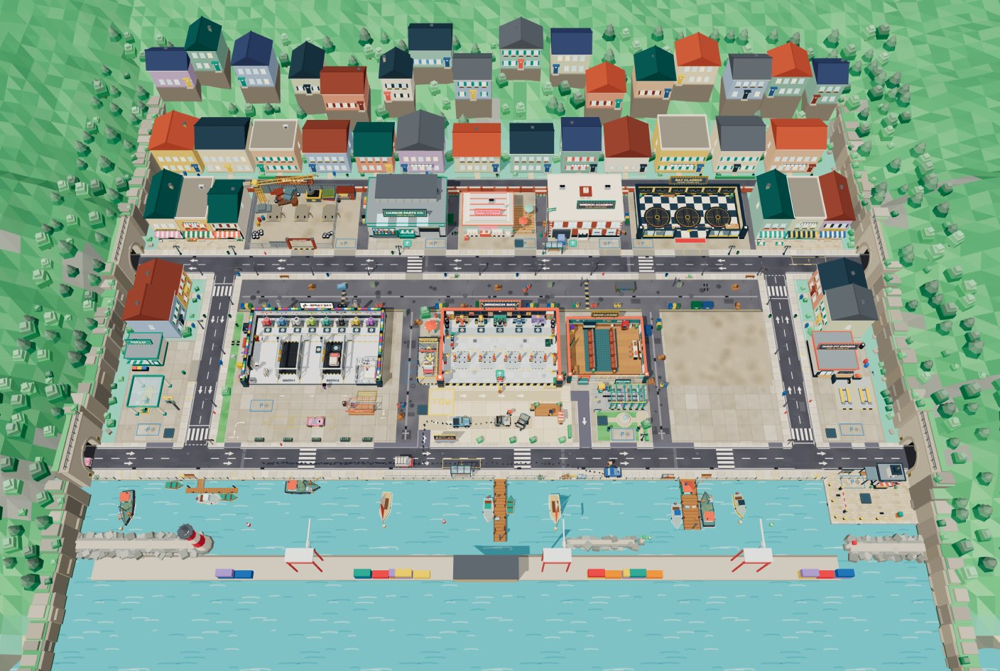

Harbor Town becomes a bay you drive around
Today the whole town is 122 × 61 m, about seven phone screens wide, and every shop is a walk from the garage. The proposal grows it to 430 × 340 m around a real bay, splits it into eight districts, and gives you your own car to drive between your shops. The garage lot stays exactly where it is and the town grows around it. The map below is to scale (1 m = 1 m, same coordinates as the game). Click a place, drag the phone frame, zoom with the wheel, and time any drive.
1Today: one block, everything within a walk

| Today | Proposal | |
|---|---|---|
| Size | 122 × 61 m | 430 × 340 m (~20× the area) |
| Phone screens across | ~7 | ~25 |
| Districts | 2 streets | 8 + a scenic lake |
| Roads | one one-way ring | coast road, a highway loop, a town grid, 3 bridges |
| How you get around | walk; the tow truck for rescues | your own car, then a route line, then autopilot |
| Longest trip | ~25 s on foot | … by car (… tuned) |
| Garage → VIP club | a few seconds' walk | … drive down the coast |
What's wrong with today's map isn't its looks. It's that there is nowhere to go. Every shop sits on one block, so a car would have nothing to do, and the late game has no sense of a town growing outward.
2Five rules the layout follows
The first things you buy are a walk away. Goals drift outward as you go, and the ferry sits at the far tip of the bay. Trips get longer at the same pace your crew frees you from the garage.
Inside a district everything is under ~8 s on foot from its P bay. From the garage, every district is 5–40 s by car, and under 30 s once the car is tuned. Route 1 is the fast way round.
At least one thing per ~15 s of driving: a shop, a rescue spot, a house call, a golden wrench, a landmark, a level crossing. A road with nothing on it gets cut.
Shops you're away from keep running. A shop strip on the HUD shows trouble anywhere. Nothing fails hard: being late only means less money.
Shops stand on the north side of their street, facing the camera. The scrapyard is by the port and the gas station at the highway exit. Villas sit by the marina. Boats lift the drawbridge and trains close the crossing.
3The eight districts
Click a card to fly the map there, or a place to open it. Drive times are door to door from the garage in the starting car.
4Your car
- You get it when the town opens. Once the valet and a mechanic are hired, the barriers lift and the garage's old shop pickup rolls out of the new carport: "Your crew can hold the shop. Take the pickup." It's free and it's yours.
- It drives like the customer cars, only faster. Same joystick. 10 m/s against their 7.5, up to 14 tuned, and 40% faster on Route 1, where there are no crossings or people. You get out only in a P bay, and every shop has one at its door.
- The bed is its job. An open pickup bed, which the high camera sees from above. It carries parts for house calls, lunch boxes, rare parts for classics. You load and unload at the tailgate ring, the same way you deliver to a lift mat.
- The carport at home (where the VIP club stands today): a tune-up pad (engine, bed size, horn). Repaint the pickup at the Spray Bay. Swap to any classic you restored, so your collection becomes your garage of rides.
- Left out on purpose: fuel, damage to your own car, speeding fines. Each is friction with no fun in it. The tow truck stays the rescue vehicle, and you can drive either one between shops.
5Getting around: help arrives as the trips get longer
The lot and the home block. Nothing changes.
Your pickup. Every road is open from the moment the town opens, as the whole map is today (since 13 Nov).
Free. Tap a place on the map and a line is painted on the road, with an edge pointer when it's off screen. Getting lost isn't a skill.
Stop in a managed shop's P bay and the manager runs the safe's cash out to your window. A collection round never has to leave the car.
Pro Gear at Harbor Parts Co. The car drives the route itself (the dispatcher's road driving, which already exists). Touch the stick to take over.
Towed somewhere and left your pickup behind? Your valet brings it to the nearest P bay.
Driving camera
A portrait screen sees ~27 m up but only ~17 m across, so east–west driving is blind. The camera pulls back with speed (×1.0 standing, ×1.3 at top speed) and leads ~6 m ahead of the car. Most long roads run north–south (Hill Road, the avenues, Mill Road, Cape Road) because that's the direction the screen sees furthest.
Shop strip (HUD)
One small chip per shop you own (garage, Spray Bay, Platinum Club, Quick-Fit). Each shows the worst customer mood there and a cash dot when its safe is full. Tap a chip and the route line goes there. Off-screen shops simulate on paper (queues, timers, payouts) and only get their 3D back when you arrive.
6Jobs a bigger map makes possible
A Maple Hill resident's car won't start in their driveway. The call shows which parts it needs. Grab them at the garage, load them into the bed, drive over, park in the kerb bay and fix it on the driveway. Pays on the spot plus a tip, and villas tip big. This is why the houses exist.
Calls now come from everywhere: near ×2.5, in town ×3, far ×4 (Route 1, the lake, the cape, the port). A long tow over a bridge through traffic is the challenge, and the dispatcher takes the far ones late in the game.
Buy a wreck at the Yards and tow it across the river. Garage lifts make it run, then drive it yourself to the Spray Bay, down the coast to the club's turntable, and next door to Bay Classics. Sell it, or keep it as your ride.
Greasy Spoon lunch boxes go in the bed. Every crew you feed (garage, paint, club, Quick-Fit) works faster for a while, so a round town trip pays off.
The Town Hall board. Bay Cabs, the police, Harbor Buses, the school and Gelato Bros each send a batch of their vehicles to your garage. Fix them all before the deadline for a lump sum and fame. The vehicles already drive in traffic, and their depots give the new buildings a reason to be there.
Hidden at landmarks: under the drawbridge, by the level crossing, at the lake lookout, on the last pontoon, under the lighthouse. They're a reason to take the long way round.
7A six-hour game, on the map
Each step is the next goal and where it is. Click one to see it on the map. The first hour stays within ~25 s of the garage. The last goals sit at the far ends of the map.
8What stays, what moves, what's new
Stays
The garage lot (LAYOUT untouched), tow shed, lounge, car wash, Spray Bay, Harbor Street and the quay, and on Main Street Harbor Parts Co. and Wrench Academy. Today's whole town is the dashed box on the map, and almost all of it survives as Harbor Front and Downtown.
Moves
Platinum Club and Bay Classics go to Marina Point. Rust & Gold Salvage goes to the Yards. Pump & Go and Quick-Fit go to Route 1 Services. The ferry goes to Lighthouse Cape. The diner moves one plot west so Hill Road can run north through the middle. Facilities keep their floor plans; only where they stand changes.
New
Your car and the carport. Hill Road and the town grid. Town Hall and contracts. Maple Hill houses. The Yards: port, rail yard, bus depot. Sandy Cove, Marina Point, Pine Lake. Route 1 with its tunnel. Mill River with 3 bridges, one of them a drawbridge. The rail line and its level crossing.
Making it run on a phone
The world is built in district chunks, and only the 2–3 nearest are in the scene (the camera never sees more than ~35 m). Far shops simulate without meshes. Traffic and pedestrians spawn only near the player, as today. Trees, houses and containers are instanced. The lot and shop code don't change; they get a new origin.
Roads become two-way
The one-way ring worked for a 122 m loop. On a 430 m map, one-way streets mean long detours to reach something you can see across the road. The proposal makes every road two-way, with one lane each way and the highway at two.
9Your call
- Size. At 430 × 340 m the far corners (Route 1 Services, the campsite) are ~40 s from the garage in the starting car and ~29 s tuned. A tighter ~300 × 240 m version keeps the same districts with shorter roads (far trips ~25 s), but it has less room for the lake and the highway loop.
- Spray Bay next door or in its own district? The proposal keeps it next to the garage because it's the second shop you learn. Moving it (to the Yards or Sandy Cove) gives an earlier reason to drive, at the cost of a harder mid game.
- Your car. The old shop pickup (proposal: the bed makes it useful), or a car class the player picks?
- Two-way roads everywhere, or keep the one-way ring around the home block for its traffic look?